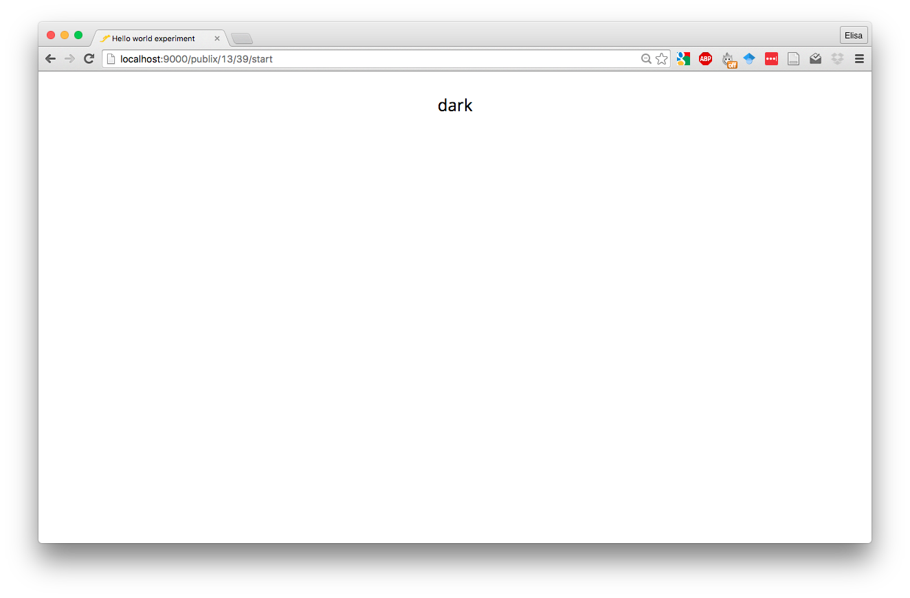
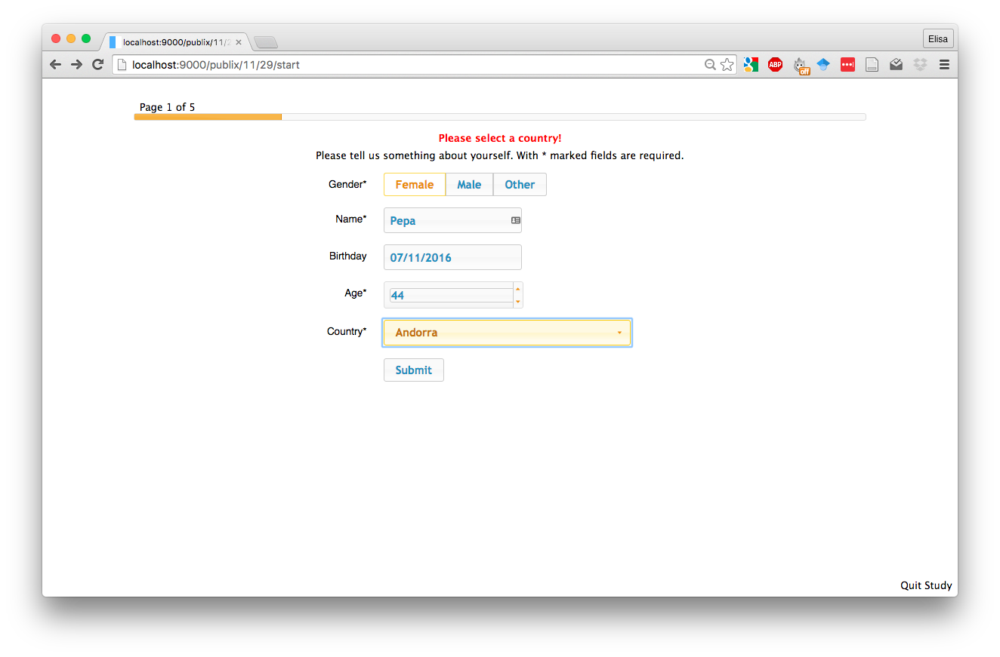
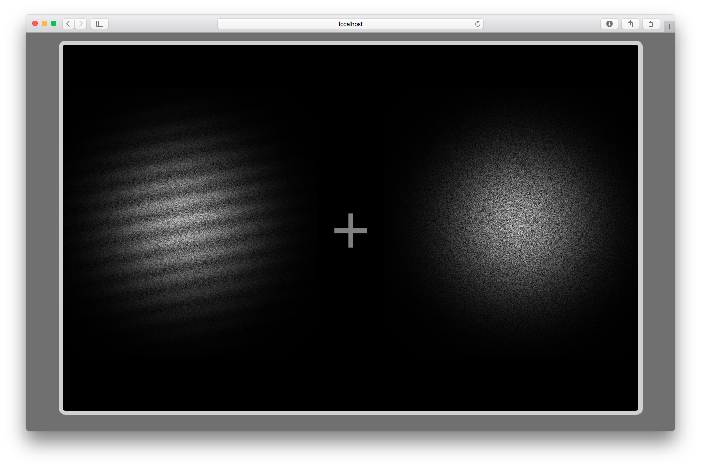
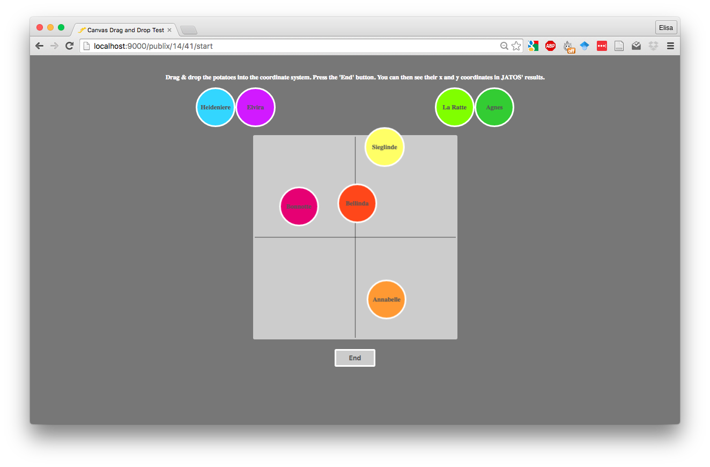
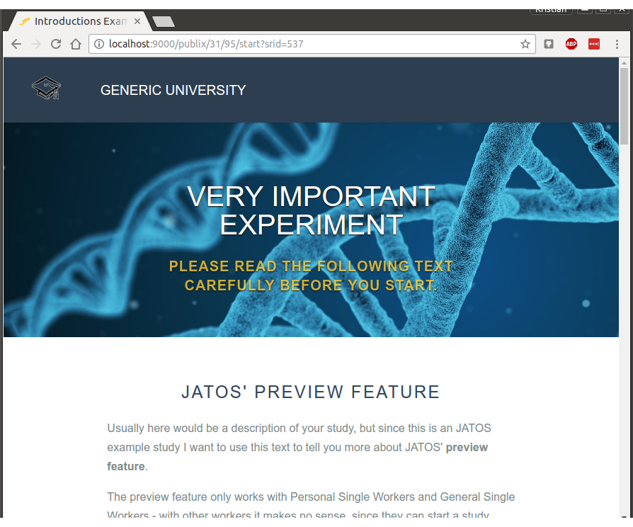
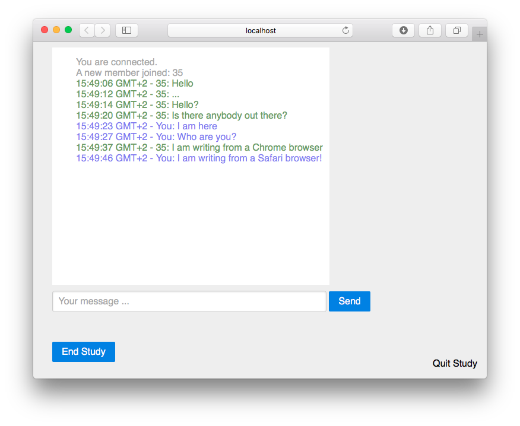
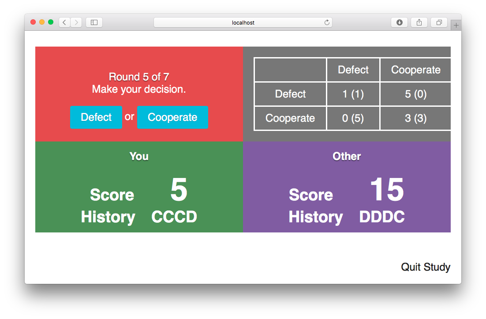

If you wrote an example study that you’d like to share, please feel free to contact us and we’ll include it in this page!
At the bottom of the page is a section of group study examples.
Since JATOS cares mostly for the server side it gives you the freedom to use in your study code whatever technologies work in browsers (e.g. HTML5 canvas, CSS3 or 3D graphics with WebGL). Additionally browser-side JavaScript libraries or frameworks like jQuery, AngularJS, Bootstrap, Highcharts or jsPsych are possible and will smooth out your path to quick and easy development. Of course the same is true for CSS modules (e.g. Pure.css, Material Design).
You can easily import/export study in JATOS. There is an ‘Import Study’ button in the header of each page and each study has an ‘Export Study’ button hidden under the ‘More’ button.
If you have trouble downloading a study (common in Safari browsers) check this troubleshooting tip.
Hello World Example
Everything starts with a Hello World!
Go- / No-Go Task (with jsPsych 5.0.3)
Standard Go- / No-Go experiment. This study illustrates the compatibility between JATOS and the excellent jsPsych library (www.jspsych.org). With jsPsych one can program the actual experiment while JATOS cares for the server-side.

Needs JATOS version 2.1.7 or newer
Lexical Decision (with jsPsych 5.0.3)
Taken from http://www.factorsdb.org/ using jsPsych library (www.jspsych.org) > In a lexical decision task, participants classify whether a string of letters is a word or a nonword. This version is based on one of the earliest lexical decision tasks, reported in Rubenstein, Garfield, & Millikan, 1970. The experiment tests response time for high and low frequency English words.

Needs JATOS version 2.1.7 or newer
jQuery UI Example
The Basic example study has simple text and is visually not very attractive. With jQuery UI it’s quite simple to add common (and pretty!) GUI elements to your study, like a date picker, a sortable list or a slider.

Download jQuery UI Example Study
Video Example
Shows how to embed a video with HTML 5 by using the browsers video player, YouTube, or the video.js JavaScript library.

Needs JATOS version 1.1.11 or newer
2048 Game
This addictive game is created by Gabriele Cirulli. Based on 1024 by Veewo Studio and conceptually similar to Threes by Asher Vollmer. The original game is published under the MIT licence. The source code can be found in GitHub.

Needs JATOS version 1.1.11 or newer
Data Visualization Example (with Highcharts)
An example of a (slightly different) use of JATOS. Here, we’re not collecting participants’ data. We’re just using JATOS as a regular server to display an HTML page. In this case, the page uses the Highcharts library to display the results from a questionnaire that we ran online in JATOS.

Needs JATOS version 1.1.11 or newer
Download Data Visualization example
Angling Risk Task Always Sunny (using jsPsych)
This is a study using jsPsych library (www.jspsych.org) taken from expfactory.github.io. It’s another example for how easy it is to use JATOS as a backend for jsPsych.
In this task, you will participate in a fishing tournament. During this tournament you will play a fishing game for multiple rounds. Each round, you will see a lake which has many fish in it. Your goal is to catch as many fish as possible.

Needs JATOS version 2.1.7 or newer
Download Angling Risk Task Always Sunny
Self Regulation Survey (from The Experiment Factory)
This is an example for standard questionnaire as done by expfactory.github.io.

Needs JATOS version 2.1.7 or newer
Download Self Regulation Survey
Invaders Game (with Phaser framework)
This classical arcade game is an example for a game made with the Phaser framework (phaser.io). It is taken from their examples at github.com/photonstorm/phaser-examples.

Needs JATOS version 2.1.7 or newer
Perceptual Metacognition (using jsPsych)
This is a standard visual metacognition task. It is uses the jsPsych library (www.jspsych.org) and is taken from expfactory.github.io.

Needs JATOS version 2.1.7 or newer
Download Perceptual Metacognition Study
Potato Compass (using interact.js)
Example how to use interact.js (http://interactjs.io/) to achieve draggable elements (drag & drop).

Needs JATOS version 2.1.7 or newer
Simple Consent Form
Simple example of a consent form with text and buttons ‘I agree’ and ‘Cancel’.

Needs JATOS version 2.1.7 or newer
Preview Showcase (Introduction with Consent)
This mobile-friendly example just has an introduction component that includes a consent text. With pressing the start button the worker gives his consent. This is also a good showcase for the JATOS’ preview feature.

Needs JATOS version 2.1.7 or newer
Download Preview Showcase (Introduction with Consent)
Results in CSV Format Example
Simple example of how to store results in CSV format

Needs JATOS version 2.1.7 or newer
Download Results as CSV Example
Group Study Examples
Group Chat
Let members of a group study talk to each other: Here is a chat example.

Needs JATOS version 2.1.12 or newer
Prisoner’s Dilemma
This is an implementation of the Prisoner’s Dilemma to show the group study feature of JATOS where two workers interact with each other in the same study run.

Needs JATOS version 2.1.1 or newer
Download Prisoner’s Dilemma example
Snake
This is a variant of the Snake game in which one can play against several other players to show the group study feature of JATOS where several workers interact with each other in the same study run.

Needs JATOS version 2.1.3 or newer